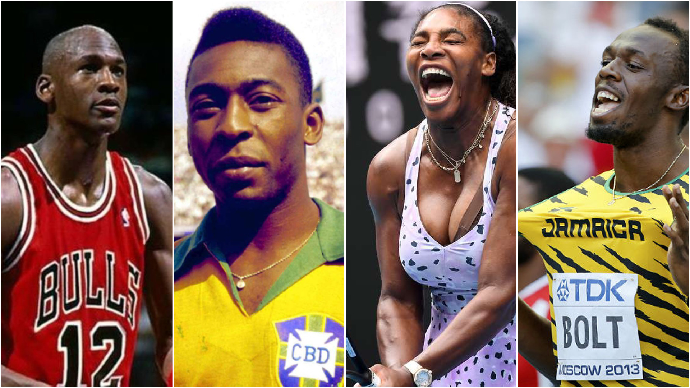

Superioridad de la etnia negra: ¿Es una simple percepción o tienen un trasfondo biológico?
Resumen
Este informe tiene como objetivo investigar si la presunta superioridad atlética de los deportistas afrodescendientes—incluyendo individuos de ascendencia americana, caribeña, británica y africana—se basa en fundamentos biológicos o si es una construcción cultural. A través de un análisis exhaustivo de las dimensiones perceptuales y científicas, se pretende ofrecer una comprensión integral de esta cuestión, considerando tanto la biología como los aspectos sociales. Para abordar esta cuestión, se diseñó y aplicó una metodología basada en encuestas estructuradas con el fin de evaluar las percepciones y creencias acerca de la superioridad atlética atribuida a los atletas afrodescendientes. La muestra, compuesta por 170 participantes,incluyó estudiantes de enseñanza media (2°, 3° y 4° medio), personal administrativo y docentes del Colegio Marista de Curicó. La encuesta constó exclusivamente de preguntas cerradas, orientadas a capturar datos precisos sobre las creencias prevalecientes en la muestra. Además se hizo un análisis comparativo de datos de 17 fuentes las cuales permitieron evaluar la consistencia entre las percepciones culturales y los fundamentos biológicos sugeridos por la investigación para llegar a la respuesta. Los resultados de la investigación sugieren que, aunque se identifican ciertas ventajas biológicas relacionadas con la genética y la etnia en determinados contextos deportivos, la percepción de superioridad atlética debe ser sometida a un análisis crítico. Se concluye que tales percepciones pueden contribuir a la perpetuación de generalizaciones y estereotipos que refuerzan desigualdades. Por lo tanto, se enfatiza la necesidad de una comprensión objetiva que contemple tanto los factores biológicos como los contextos culturales y sociales en la evaluación del rendimiento deportivo.